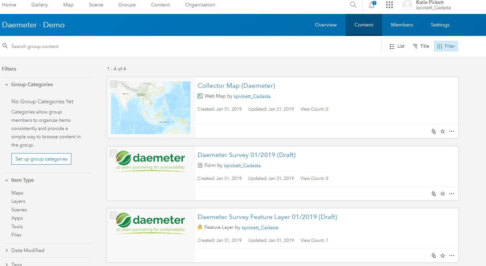
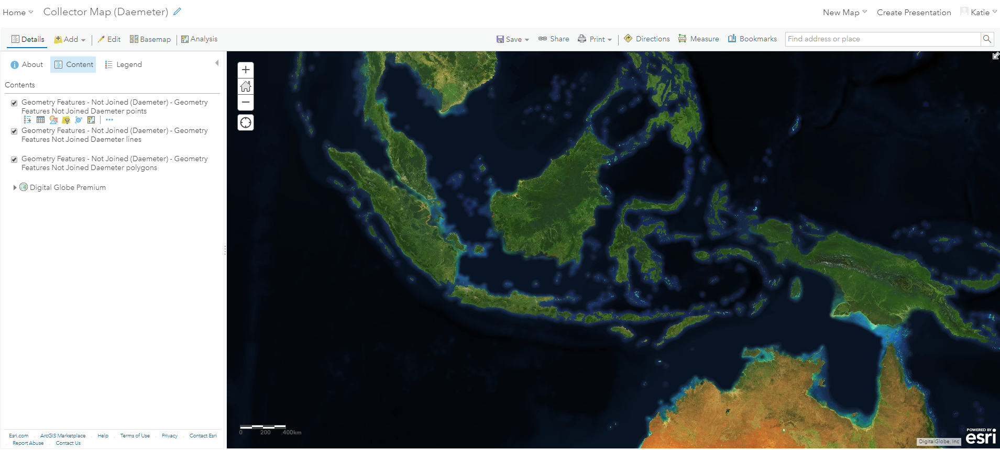

Purpose
This page will explain how to change a basemap for a web map in ArcGIS Online (AGOL)
Requirements
- You will need to have a username and password set up for you by a Cadasta team member. If you do not have a user please contact support@cadasta.org
- You will need to sign to your account - see Introduction to your account for a reminder
Steps
In AGOL, navigate to your Group page

Press the "Content" tab in your Group page 
Find and select your Collector Map (Organization Name)

Press the "Open in Map Viewer" button

See the Map Viewer with the Collector Map (Organization Name) 
Press the "Basemap" button

Choose your desired Basemap Note see the difference in the two Basemaps


Press the "Save" button